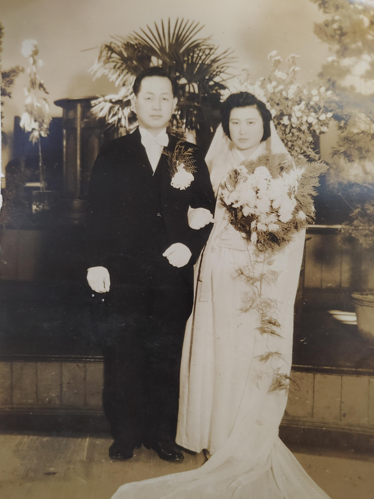
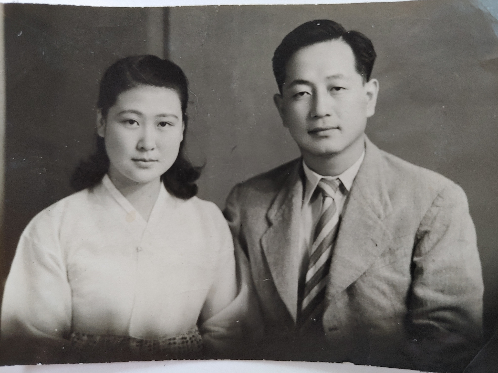
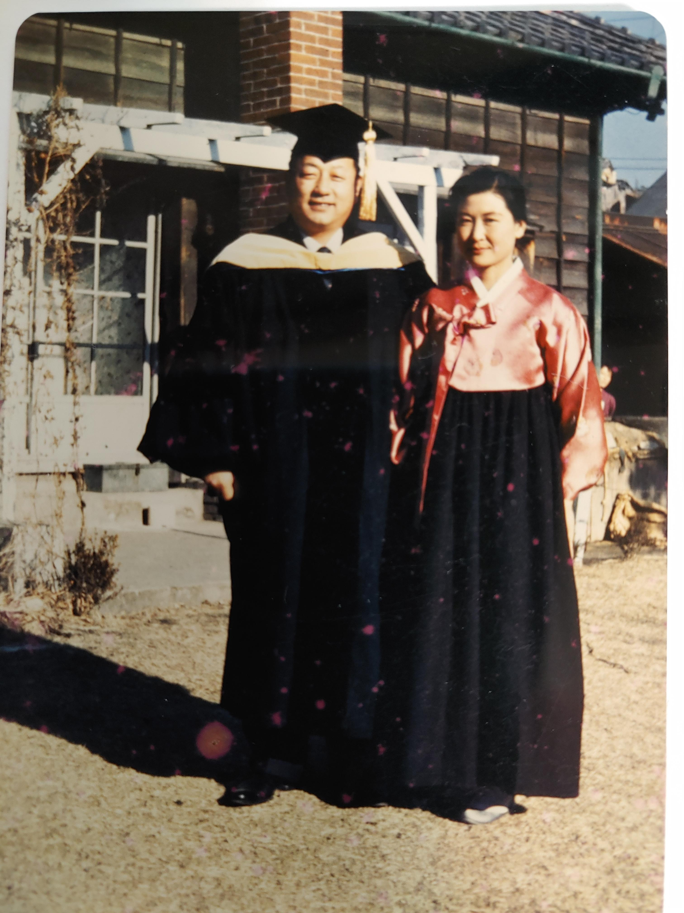
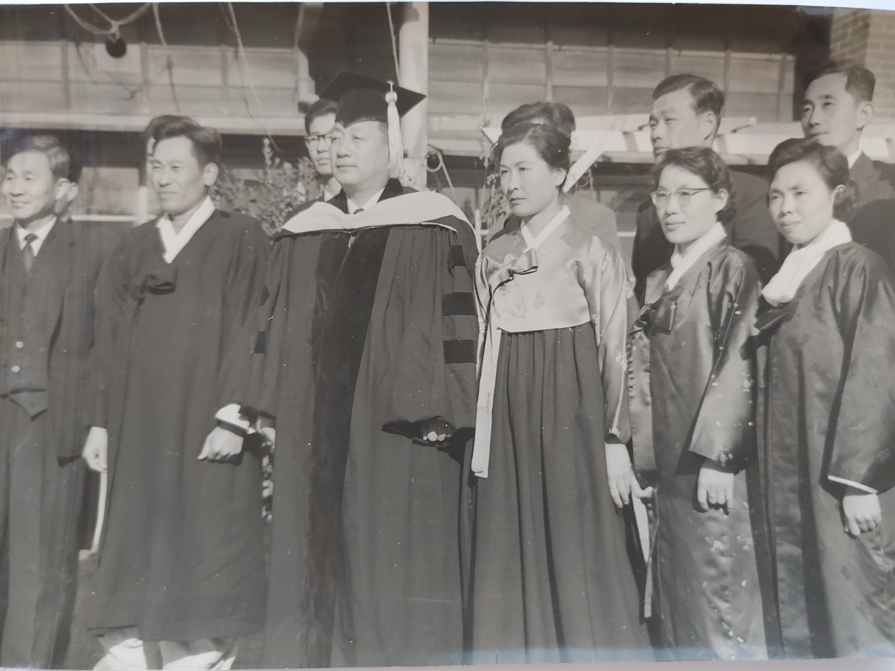
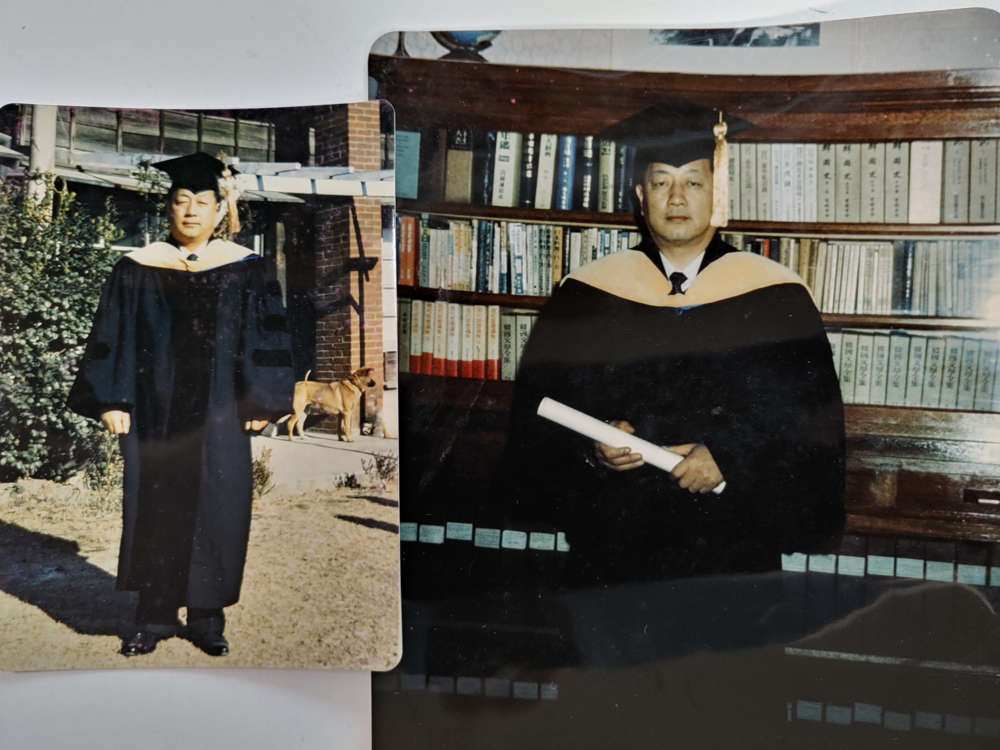

1948년 겨울. 아버지는 식물학과 교수, 어머니가 숙명여대 가사과 졸업반이던 당시. 나비넥타이는 이후로도 즐겨 매셨다.

약혼식날이 아닐까 생각..

청량리 관사뜰에서 박사학위 기념촬영(1961.10). 내가 초등2학년이던 이때의 기억이 어렴풋이나마 떠오른다.

정영호, 조동화, 류.. 그러고보니 조동화 선생은 식물학과 동문시이다. 조동화 선생은 언론인, 문인, 잡지(춤)편집인으로 재치가 풍부하신 분이어서 종종 우리집에 놀러오시면 웃음꽃을 만들어내셨다. 고대토기와 석물을 수집하는 취미를 가지고 계셨고 언젠가 피아노 엘리제를 위하여 연주를 하던 기억난다. '춤'지에 호랑이이야기라는 꽁뜨를 연재하여 즐겨 읽곤 했다. '자연과 인간'에 아버지에 대한 친근한 추억을 기고하셨다.
